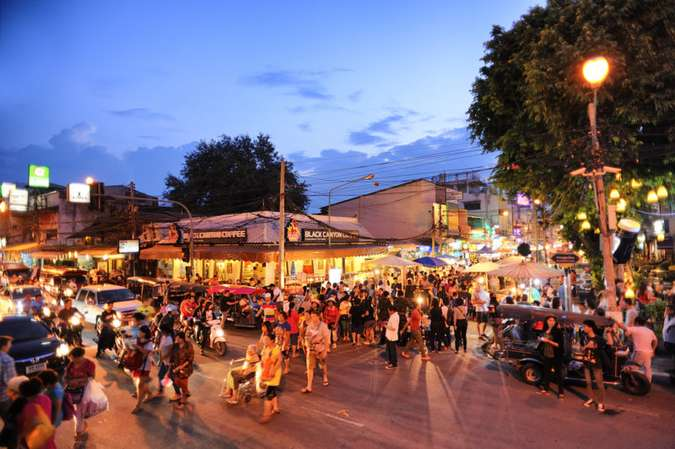
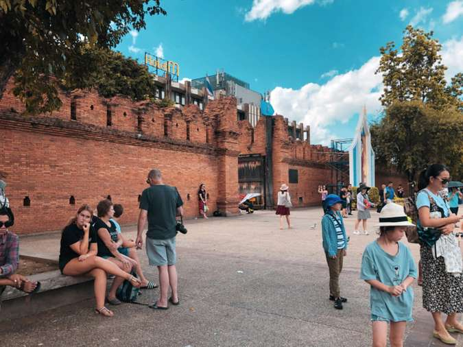
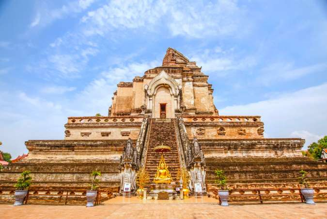
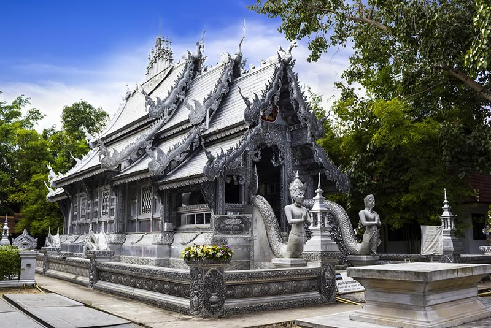
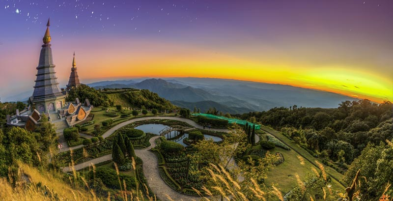
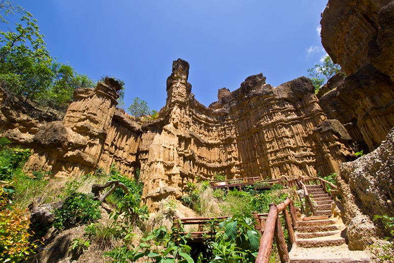

| 🏡 วัฒนธรรมเชียงใหม่ 🏡 | 🏡 อาหารพื้นเมือง 🏡 |
ด้วยธรรมชาติที่สวยงามผสมผสานกับวัฒนธรรมล้านนาและสีสันของความร่วมสมัยอย่างลงตัว เชียงใหม่จึงเป็นจังหวัดที่มีนักท่องเที่ยวทั้งชาวไทยและชาวต่างชาติหลั่งไหลเข้ามาจำนวนมากปีละหลายล้านคน กิจกรรมท่องเที่ยวยอดฮิตในจังหวัดเชียงใหม่ ได้แก่ การขึ้นไปสักการะพระธาตุดอยสุเทพซึ่งเป็นสถานที่สำคัญคู่บ้านคู่เมืองของชาวเชียงใหม่ สัมผัสวิถีชีวิตพื้นเมืองและเลือกซื้อสินค้าแฮนด์เมดเก๋ ๆ ที่ถนนคนเดินท่าแพ ชมพันธุ์ไม้นานาชนิดที่สวนพฤกษศาสตร์สมเด็จพระนางเจ้าสิริกิติ์ หรืออุทยานหลวงราชพฤกษ์ รวมไปถึงการแวะช้อป-ชม-ชิม ร้านค้า ร้านอาหาร และศิลปวัฒนธรรม บนถนนนิมมานเหมินทร์ นอกจากนี้ การเที่ยวชมธรรมชาติและดอยต่าง ๆ ก็ถือเป็นอีกกิจกรรมที่ไม่ควรพลาดเมื่อมาเยือนจังหวัดเชียงใหม่ ไม่ว่าจะขึ้นไปเหยียบจุดสูงสุดของประเทศไทยบนยอดดอยอินทนนท์ ซึมซับความสวยงามของนาขั้นบันไดม่อนแจ่ม รับลมหนาวพร้อมชมดอกพญาเสือโคร่งที่ดอยอ่างขาง เที่ยวเชิงอนุรักษ์แบบโฮมสเตย์ที่แม่กำปอง เยี่ยมชมหมู่บ้านม้งที่ดอยปุย และอีกมากมาย จังหวัดเชียงใหม่แบ่งเขตการปกครองออกเป็น 25 อำเภอ ได้แก่ อำเภอเมืองเชียงใหม่ อำเภอจอมทอง อำเภอแม่แจ่ม อำเภอเชียงดาว อำเภอดอยสะเก็ด อำเภอแม่แตง อำเภอแม่ริม อำเภอสะเมิง อำเภอฝาง อำเภอแม่อาย อำเภอพร้าว อำเภอสันป่าตอง อำเภอสันกำแพง อำเภอสันทราย อำเภอหางดง อำเภอฮอด อำเภอดอยเต่า อำเภออมก๋อย อำเภอสารภี อำเภอเวียงแหง อำเภอไชยปราการ อำเภอแม่วาง อำเภอแม่ออน อำเภอดอยหล่อ และอำเภอกัลยาณิวัฒนา |
| 1.ถนนคนเดินเชียงใหม่ |
|---|
|  |
ไฮไลท์ของเชียงใหม่อีกอย่างหนึ่งก็คือ “ถนนคนเดินท่าแพ” ที่จัดขึ้นทุกวันอาทิตย์ของทุกสัปดาห์ ซึ่งจะมีการปิดถนนยาวหลายกิโลเมตร ตั้งแต่ท่าแพไปจนถึงหน้าวัดพระสิงห์ ซึ่งภายในถนนคนเดินก็จะมีชาวเชียงใหม่เอาของมาขายมากมาย มีตั้งแต่ของกิน ของพื้นเมือง ไปจนถึงของฝาก ถ้าหากใครมาเที่ยวเชียงใหม่ตรงกับวันอาทิตย์ แนะนำให้ลองมาเดินเล่นที่ถนนคนเดินท่าแพดูสักครั้ง |
| 2.ประตูท่าแพ |
|  |
สัญลักษณ์หนึ่งของเชียงใหม่ก็คือ “ประตูท่าแพ” เป็นประตูเมืองทางทิศตะวันออก ที่ยังคงหลงเหลือร่องรอยของอดีตให้เห็นทุกวันนี้ ซึ่งประตูท่าแพนี้เองก็เป็นอีกหนึ่งจุดที่เที่ยวในเมืองเชียงใหม่ ที่ได้รับความนิยมจากชาวต่างชาติเป็นอย่างมาก คนส่วนใหญ่จะนิยมมาถ่ายรูป และให้อาหารนกพิราบ แต่จริงๆ แล้วประตูท่าแพนั้นเหมือนกับเป็นจุดศูนย์รวม สามารถเดินต่อไปยังถนนราชดำเนินได้ อีกทั้งยังสามารถเดินทางไปเที่ยวบริเวณเมืองเก่า และคูเมืองได้ง่าย ถ้าหากใครมาเที่ยววันอาทิตย์ก็จะพบว่าถนนท่าแพนั้นถูกปิด เนื่องจากมีงานถนนคนเดิน |
| 3.วัดเจดีย์หลวงวรวิหาร |
|  |
นอกจากวัดพระสิงห์ และวัดพันเตาแล้ว ก็ยังมีวัดที่น่าสนใจอีกแห่งหนึ่งคือ “วัดเจดีย์หลวงวรวิหาร” เป็นพระอารามหลวงของเมืองเชียงใหม่ เป็นวัดที่เก่าแก่ และมีประวัติศาสตร์ที่น่าสนใจเป็นอย่างมาก ด้านในจะเป็นที่ตั้งของพระธาตุเจดีย์หลวง ซึ่งถือว่าเป็นพระธาตุที่มีความสูงที่สุดในภาคเหนือ อีกทั้งยังมีพระวิหารหลวง ที่เจ้าแก้วนวรัฐเป็นผู้สร้างขึ้นอยู่ภายในวัดเจดีย์หลวงอีกด้วย นับว่าเป็นวัดที่มีประวัติความเป็นมาที่น่าสนใจ และโบราณสถานที่สำคัญของเมืองล้านนา |
| 4.อุทยานหลวงราชพฤกษ์ |
ใกล้ๆ กับสวนสัตว์เชียงใหม่ไนท์ ซาฟารี ก็มีอีกสถานที่เที่ยวในเมืองเชียงใหม่ที่น่าสนใจ นั่นก็คือ “อุทยานหลวงราชพฤกษ์” ที่เคยเปิดตัวไปอย่างยิ่งใหญ่อลังการ ถ้าหากใครที่ยังไม่เคยไป แนะนำให้ลองไปเที่ยวดู เพราะภายในอุทยานหลวงแห่งนี้จะเต็มไปด้วยโซนต่างๆ ที่มีการปลูกดอกไม้อย่างสวยงาม นอกจากนั้นยังมีการจัดแสดงนิทรรศการด้านการเกษตรอื่นๆ ด้วย หากใครอยากถ่ายรูปกับดอกไม้สวยๆ แนะนำให้มาที่อุทยานหลวงราชพฤกษ์แห่งนี้ |
| 5.วัดอุโมงค์ |
 |
ใจกลางเมืองเชียงใหม่เองใช่ว่าจะมีแต่ความวุ่นวาย หากใครอยากหาที่เที่ยวในเมืองเชียงใหม่แสนสงบ หรืออยากจะเข้าวัด ฟังธรรม รวมถึงให้อาหารปลา อยากให้ลองมาเที่ยวที่ “วัดอุโมงค์” ที่ขับรถเพียงแค่ 10 นาทีจากย่านนิมมานเหมินห์ก็ถึงแล้ว เนื่องจากวัดอุโมงค์จะอยู่ทางหลังม.เชียงใหม่ ภายในซอยวัดอุโมงค์ เข้ามาประมาณ 700 เมตร ก็จะเจอกับวัดอุโมงค์ที่แสนเงียบสงบ บรรยากาศดี รายล้อมไปด้วยสีเขียวของธรรมชาติ ที่สำคัญคือวัดอุโมงค์แห่งนี้ยังเหมาะกับการนั่งสมาธิ หรือว่าปฎิธรรม เพราะเป็นสถานปฎิบัติธรรมที่เคร่งครัด และมีชื่อเสียง |
| 6.วัดศรีสุพรรณ |
|  |
วัดอีกแห่งหนึ่งในเชียงใหม่ที่เราชวนไปไหว้พระ เพราะที่นี่มีพระอุโบสถสุดอลังการที่สร้างขึ้นเมื่อปี พ.ศ. 2043 ในรัชสมัยของพระเจ้าเมืองแก้ว ภายในเป็นที่ประดิษฐานพระพุทธปาฏิหาริย์ (พระเจ้า 500 ปี) เดิมทีอุโบสถหลังนี้ชำรุดทรุดโทรมมาก ภายหลังได้มีการสร้างอุโบสถใหม่ขึ้นเป็นอุโบสถเงิน โดยมีสถาปัตยกรรมแบบล้านนาโบราณ มีโครงสร้างก่ออิฐถือปูนและมีการประดับตกแต่งลวดลายทุกส่วนด้วยอะลูมิเนียมและเงิน พร้อมมีการสลักลวดลายภาพสามมิติที่มีเรื่องราวเกี่ยวกับพุทธศิลป์ปริศนาธรรม คำสอนในทางพระพุทธศาสนา ประวัติศาสตร์ของวัดและชุมชน เรียกได้ว่าเป็น อุโบสถที่ทำจากเงินและอะลูมิเนียมหลังแรกของโลก เลยก็ว่าได้ |
| 7.ดอยอินทนนท์ |
|  |
ดอยอินทนนท์ เป็นยอดดอยที่ไม่ควรพลาดอย่างยิ่ง เพราะที่นี่สูงจากระดับน้ำทะเลมากถึง 2,565 เมตร จึงเป็นภูเขาที่สูงที่สุดในเมืองไทย ซึ่งใครต่อใครก็อยากได้ไปสัมผัสสักครั้งในชีวิต ดอยอินทนนท์ตั้งอยู่ในอุทยานแห่งชาติดอยอินทนนท์ มีธรรมชาติที่อุดมสมบูรณ์ อากาศจึงหนาวเย็นตลอดทั้งปีนอกจากนี้บริเวณโดยรอบดอยอินทนนท์ยังมีสถานที่ท่องเที่ยวที่น่าสนใจอีกมากมาย ไม่ว่าจะเป็นเส้นทางศึกษาธรรมชาติกิ่วแม่ปาน, เส้นทางศึกษาธรรมชาติอ่างกา, น้ำตกสิริภูมิ, น้ำตกแม่ยะ, น้ำตกวชิรธาร, พระมหาธาตุเจดีย์นภเมทนีดล, พระมหาธาตุเจดีย์นภพลภูมิสิริ |
| 8.ผาช่อ |
|  |
ดินแดนแห่งหน้าผาหินเมื่อ 5 ล้านกว่าปีก่อน ตั้งอยู่ภายในอุทยานแห่งชาติแม่วาง เป็นปรากฏการณ์ธรรมชาติที่เกิดจากการกัดเซาะของลมฝน จนทำให้แผ่นดินที่เชื่อกันว่าเมื่อหลายร้อยปี หรือพันปีก่อนบริเวณแห่งนี้เคยเป็นทางเดินของแม่น้ำปิง ได้เปลี่ยนสายย้ายทิศไหลผ่านไปที่อื่น บริเวณนี้จึงได้ยกตัวเป็นเนินเขาสูงตะกอน จนมีรูปร่างสวยงามแปลกตา คล้ายกับแพะเมืองผี ที่จังหวัดน่าน มีขนาดสูงใหญ่ราว 30 เมตร และยังพบรังผึ้งขนาดใหญ่อยู่ตามหน้าผาจำนวนมาก สร้างความตื่นตาตื่นใจแก่ผู้ที่เข้าไปเที่ยวชมกับความงามปนความอะเมซิ่งเช่นนี้ |
|
|
|